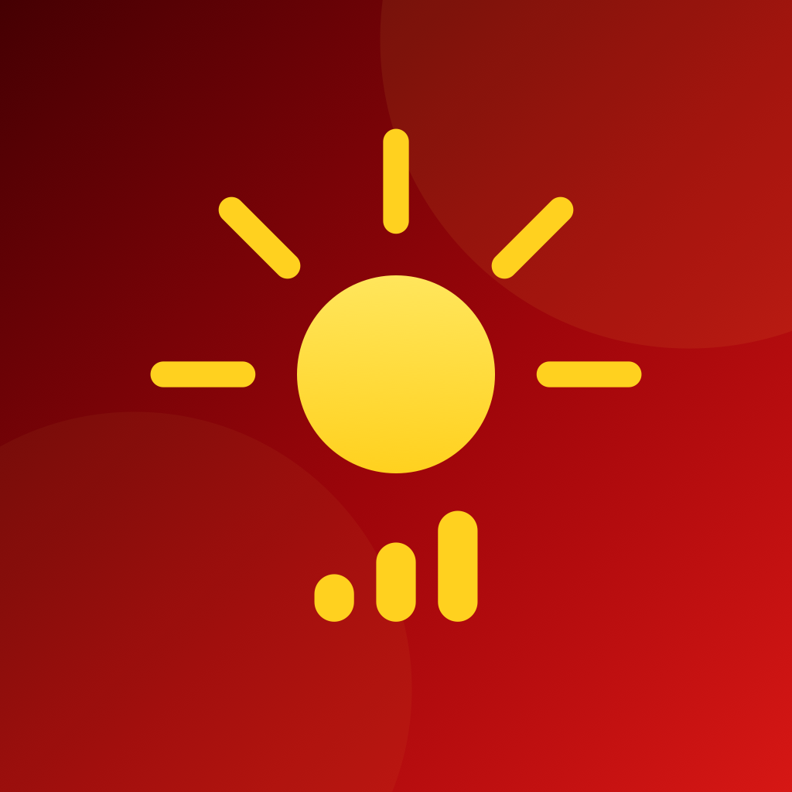

SolarErtrag · Stand: 26. November 2026
Zlatko Nikolov
E-Mail: info@pirok.net
SolarErtrag ist eine unabhängige App für iOS und Android, die Erträge und die aktuelle Leistung von Photovoltaikanlagen anzeigt. Sie ist mit Growatt, Deye, Anker SOLIX, Zendure SolarFlow und EcoFlow STREAM kompatibel, aber keine offizielle App der jeweiligen Hersteller und steht in keiner Verbindung zu ihnen.
Deine Zugangsdaten werden ausschließlich direkt an den Cloud-Dienst des gewählten Anbieters gesendet: Growatt OpenAPI (openapi.growatt.com oder die gewählte Region), DeyeCloud OpenAPI (z. B. eu1-developer.deyecloud.com), Anker Power Cloud (ankerpower-api-eu.anker.com bzw. ankerpower-api.anker.com), Zendure Cloud (app.zendure.tech, Live-Daten per MQTT) oder EcoFlow IoT Open Platform (api.ecoflow.com bzw. api-e.ecoflow.com für Europa).
Es gibt keinen Server des App-Anbieters: Die Daten werden nicht an den Entwickler oder an Dritte weitergegeben. Für die Verarbeitung durch die Hersteller gelten deren Datenschutzbestimmungen. EcoFlow stellt über die offizielle API keine Ertragshistorie bereit; die App zeigt für diesen Anbieter nur Live-Werte.
Die optionale tägliche Zusammenfassung wird ausschließlich lokal auf dem Gerät geplant. Es wird kein Push-Server verwendet.
Die App verwendet keine Analyse- oder Tracking-SDKs, zeigt keine Werbung und erstellt keine Nutzungsprofile. Daten werden nicht verkauft oder weitergegeben.
Zugangsdaten und Einstellungen bleiben auf deinem Gerät, bis du sie entfernst oder die App löschst. Einzelne Felder kannst du jederzeit in den Einstellungen leeren. Beim Löschen der App werden die App-Daten entfernt.
Du hast das Recht auf Auskunft, Berichtigung, Löschung, Einschränkung der Verarbeitung und Widerspruch. Da der Anbieter selbst keine personenbezogenen Daten auf eigenen Servern speichert, betreffen diese Rechte die lokalen Daten auf deinem Gerät. Bei Fragen wende dich an die oben genannte E-Mail-Adresse.
Die App richtet sich nicht an Kinder unter 13 Jahren.
Diese Datenschutzerklärung kann angepasst werden, wenn sich die App oder rechtliche Anforderungen ändern. Die aktuelle Fassung ist direkt in der App unter Einstellungen → Datenschutz sowie unter dieser URL verfügbar.
SolarErtrag is an independent iOS and Android app that displays solar yield data. Your API token or account credentials for Growatt, Deye, Anker SOLIX, Zendure or EcoFlow are stored locally on your device (secrets in the iOS Keychain or Android Keystore) and are sent directly to the respective cloud API. The developer operates no server, uses no analytics or tracking, and does not collect or share personal data. You can remove the credentials at any time in the app settings.